Cloud accelerated datalab#
The Cloud Accelerated Datalab is web service to easily manage the cloud-based resources provided to each team like the S3 buckets, EC2 machines and IAM credentials. It is a secondary service for the hackathon
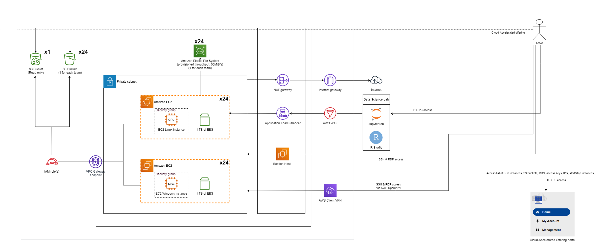
Typical use case
It can be used if the services in the Cloud Agnostic Datalab does not fulfill your needs. For example, you need to leverage GPU power to run computationally expensive data processing/ML tasks or you need root access to install a specific tool/software. Also this is the place where you can get temporary AWS access credentials to have programmatic access to the S3 Buckets of the hackathon.
The Cloud Accelerated Datalab is available under this address: https://portal.accelerated.hackathon.ecdp.tech.ec.europa.eu
Login#
To access the Login page you have click on the Log In button
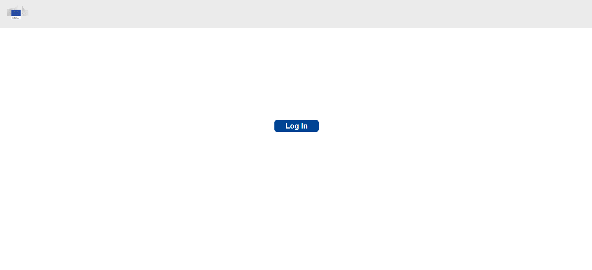
For access to the service you have to click on the EC DataPlatform Azure AD.
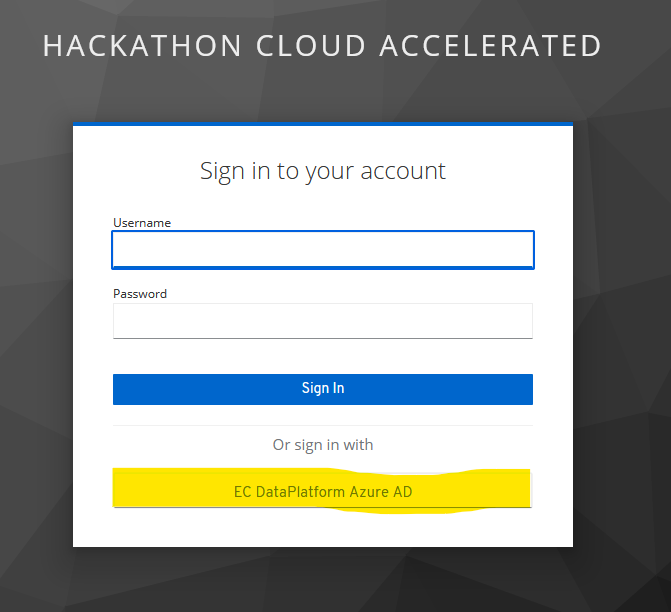
There you have to use the provided Azure AD login credentials which you received previously and activated with MFA.

For the first time login you have to enter your private email address that is used in MS Teams.
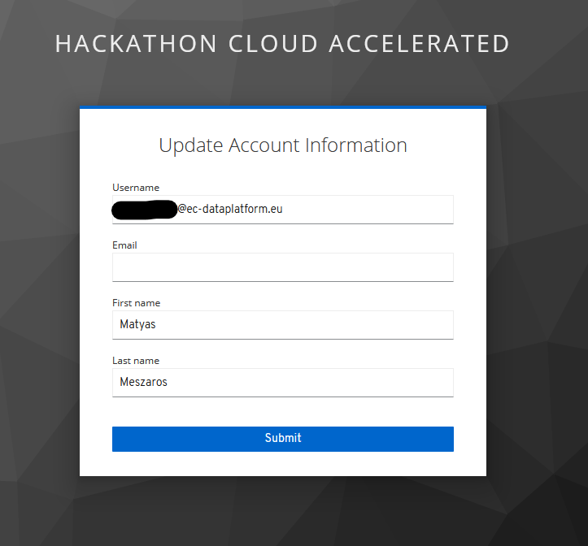
Home#
After successful login you arrive at the home screen of the Cloud Accelerated Datalab.
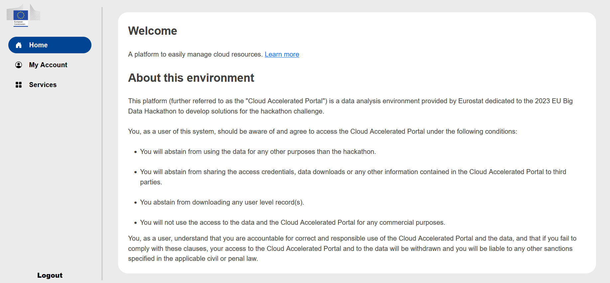
Here you can find a link to this documentation and the terms of use of these services. Please read it at least once, because by using these services you agree those terms.
My Account#
Under the My Account you find your Azure AD identifier, your name, your email which is used in the MS Teams group and where you receive the information about your Azure AD account activation. In addition, you will find here the of your group.
The sub menu Cost Reports is not used during the hackathon.
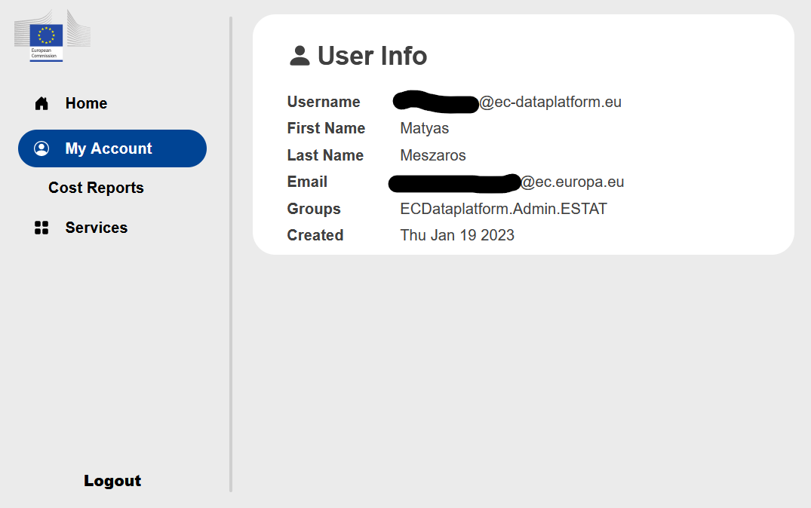
Services#
Under the Services you find the list of AWS services you can manage from the Cloud Accelerated Portal.
Amazon EC2#
Under the Amazon EC2 you can start and stop a Linux server or a Windows server with root access/administrator rights.
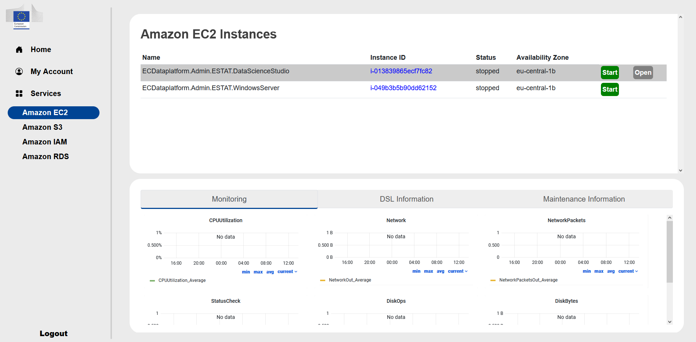
The status can be stopped, pending, running or stopping.
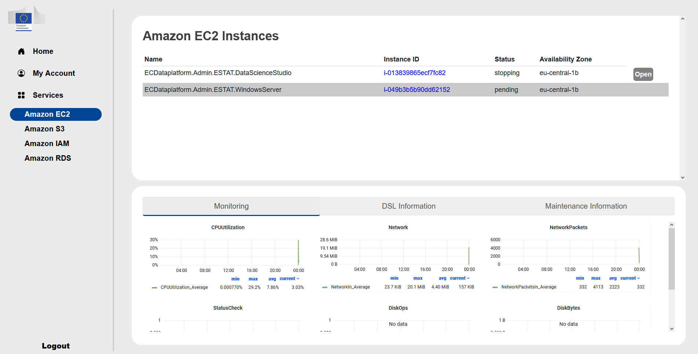 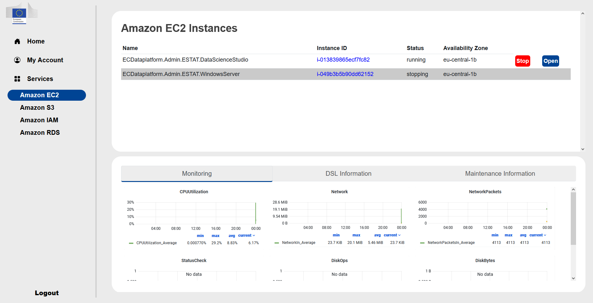
Linux server
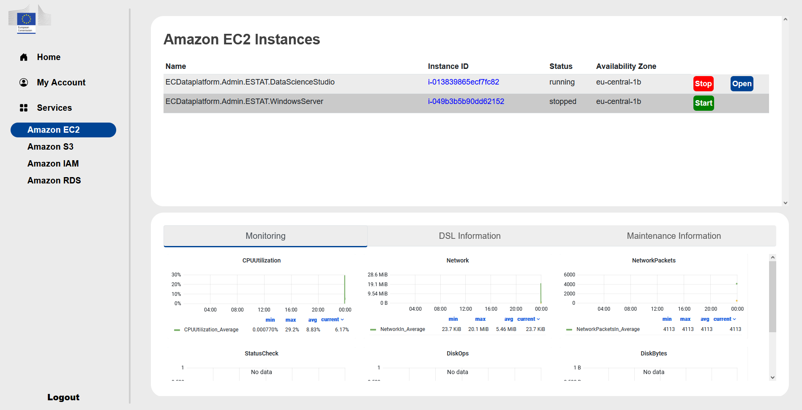
It is a g5.4xlarge instance with 16 cores, 64 GB RAM and with an NVIDIA A10G GPU. It is an Ubuntu 20.04.4 LTS Linux server with a data science image on it and it is accessible with 3 options:
The simplest way is to click on the Open button when it is blue and it open a web intarface in a new window.
Through bastion host
In exceptional cases when point 2 does not work it is possible through AWS client VPN
If you want to use option 2 or 3 you can find the internal address of the server under the link of the Instance ID. The IP address of the bastion host will be provided on request.
The data science image contains:
an RStudio server with R 4.2.0 and the following packages: base, boot, class, cluster, codetools, compiler, datasets, foreign, graphics, grDevices, grid, KernSmooth, lattice, MASS, Matrix, methods, mgcv, nlme, nnet, parallel, rpart, spatial, splines, stats, stats4, survival, tcltk, tools, utils
Jupyterlab 3.4.2 with Python 3.8.10 with the following packages: apturl, argcomplete, attrs, Automat, blinker, boto3, botocore, certifi, chardet, Click, cloud-init, colorama, command-not-found, configobj, constantly, crit, cryptography, dbus-python, defer, distro, distro-info, dnspython, ec2-hibinit-agent, entrypoints, git-remote-codecommit, gpg, hibagent, httplib2, hyperlink, idna, importlib-metadata, incremental, Jinja2, jmespath, jsonpatch, jsonpointer, jsonschema, keyring, language-selector, launchpadlib, lazr.restfulclient, lazr.uri, Markdown, MarkupSafe, mate-hud, mate-menu, mate-tweak, more-itertools, netifaces, oauthlib, olefile, onboard, packaging, pexpect, Pillow, pipx, protobuf, psutil, pyasn1, pyasn1-modules, pycairo, pycrypto, Pygments, PyGObject, PyHamcrest, PyJWT, pymacaroons, PyNaCl, pyOpenSSL, pyparsing, pyrsistent, pyserial, python-apt, python-dateutil, python-debian, python-xlib, pyxdg, PyYAML, requests, requests-unixsocket, s3transfer, SecretStorage, service-identity, setproctitle, simplejson, six, sos, ssh-import-id, systemd-python, Twisted, ubuntu-advantage-tools, ubuntu-drivers-common, ufw, unattended-upgrades, urllib3, userpath, wadllib, xkit, zipp, zope.interface
terminal access
Ubuntu MATE 1.24.0 desktop
The access credentials are the the login name of the Azure AD email and password.
Windows server
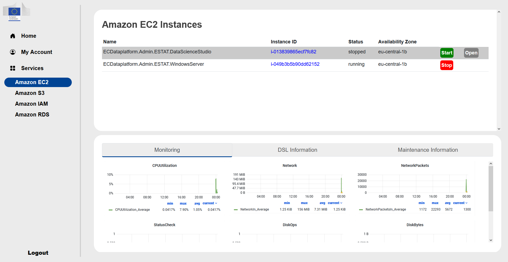 It is a r5.8xlarge instance with 32 cores and 256 GB RAM. It is a Windows 2022 server without any pre-installed software. It is accessible through Remote Desktop (RDP) connection on port 3389 tunneling through a bastion host. There is no direct Open link to it like for the Linux server. If you click on the Instance ID you can find the address of the server. The access credentials are the full Azure AD email and password.
Amazon S3#
Under the Amazon S3 you have the name of the buckets available to you. There is a read only bucket with the name ecdataplatform-horizontal-read-only-bucket containing the source data and a bucket with the name of your team where you can save intermediate results. The buckets are accessible from both environments (Cloud Agnostic Datalab and Cloud Accelerated Datalab). There is also a link to open the AWS console to view the S3 buckets, but in the console no actions can be done.
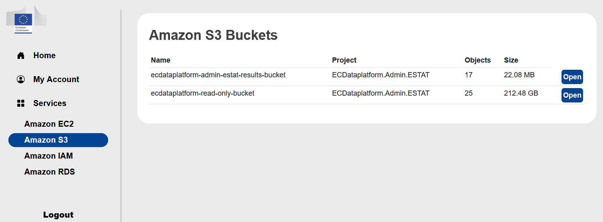
Amazon IAM#
Under the Amazon IAM you can download the already predefined AWS IAM roles for programmatic access. Also here can temporary credentials generated to the programmatic access for S3.
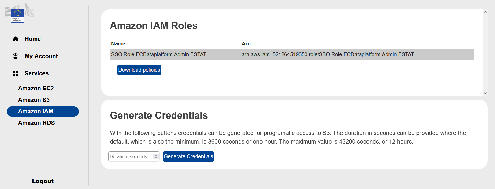
Amazon RDS#
It is not used for the hackathon.
Limitations#
The Cloud Accelerated Datalab has the following restrictions:
The Linux and Windows server has seperate disks of 1TB and not accessible from the Cloud Agnostic Datalab
The EFS storage of the Cloud Agnostic Datalab is not accessible from the Cloud Accelerated Datalab
Don’t update services’ version manually/from the UI
This does not apply to second level software packages such as libraries etc.
Users are limited when accessing AWS Management Console - only S3 view access and no actions possible
The user cannot launch an EC2 instance (or an RDS instance) directly from the portal, only Start/Stop and access the applications running on the instances